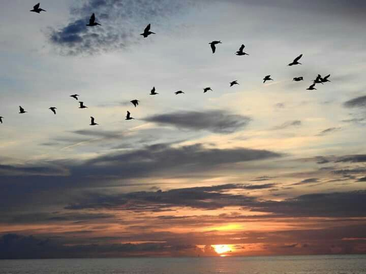
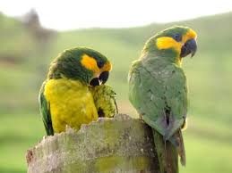
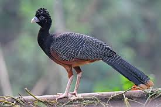
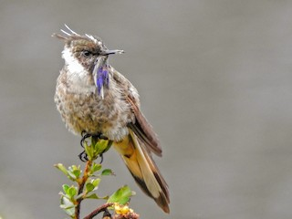
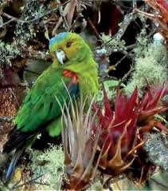
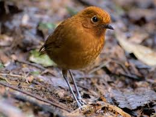

🌵 Especies Endémicas de Colombia 🌵
Colombia es conocido como el tercer país con mayor número de especies endémicas
en el mundo luego de Brasil e Indonesia, ya que posee 62.819 especies conocidas
y además el 14% de estas solo se encuentran en el país. Estas especies están
distribuidas en 6 grupos biológicos:
Aves
Reptiles
Mamíferos
Anfibios
Peces de agua dulce
Plantas y líquenes
Una especie endemica es aquella que se encuentra en una ubicación geográfica
unica y que no existe en ninguna otra parte del mundo de forma natural.
Aves 🦅 🌳

En el mundo se conocen aproximadamente 10.000 especies y Colombia es el pais
con mayor número de estas, tiene alrededor de 2.000 registradas lo cual
representa el 20% de las aves de todo el mundo.
A continuación encontrará información sobre algunas de las principales aves endémicas del país:
Loro Orejiamarillo

| Nombre científico |
Familia |
Lugar emblemático |
| Ognorhynchus icterotis |
Psittacidae |
Guática/Risaralda |
Mide alrededor de 42 cm, su frente, oídos y la zona alrededor de los ojos es de color
amarillo intenso, la corona, nuca, dorso y parte superior de sus alas y cola son de color
verde y su pecho y vientre de color amarillo. Vive en los bosques andinos húmedos del país,
principalmente en zonas con palma de cera, la cual le sirve de refugio y alimento. Se considera
en peligro de extinción.
Más información
Paujil

| Nombre científico |
Familia |
Lugar emblemático |
| Crax alberti |
Cracidae |
Zona norte de Colombia |
Puede llegar a medir 91 cm, sus plumas son negras y brillantes, excepto en la punta de la cola
y el abdomen, donde son blancas. Vive en selvas cálidas nubladas a menos de 1.500 m.s.n.m., se
encuentra en peligro de extinción debido a la destrucción masiva de su hábitat.
Más información
Chivito de Santa Marta

| Nombre científico |
Familia |
Lugar emblemático |
| Oxypogon cyanolaemus |
Trochilidae |
Santa Marta |
Puede llegar a medir 14 cm, tiene crestas blancas y puntiagudas, barba de color azul con
borde blanco, y su cuerpo es blanco con partes grises y cafés. Se encuentra en la Sierra
Nevada de Santa Marta a unos 3.050 - 4.265 metros de altitud, y actualmente hay muy pocos ejemplares.
Más información
Cotorra coroniazul

| Nombre científico |
Familia |
Lugar emblemático |
| Hapalopsittaca fuertesi |
Psittacidae |
Quindío y Risaralda |
Mide alrededor de 23 cm, se caracteriza por su corona azul en la parte superior. El rostro,
la frente y la mayoría de su cuerpo son de color verde, mientras que sus hombros son de color rojo.
Tiene tonos azules y rojos en la punta de las alas y cola. Esta ave se encuentra en grave peligro
de extinción.
Más información
Tororoi chami

| Nombre científico |
Familia |
Lugar emblemático |
| Grallaria alvarezi |
Grallariidae |
Andes Occidentales |
Puede llegar a medir 18 cm, tiene patas largas y es de color marrón o crema, lo que le permite
camuflarse fácilmente entre la hojarasca del bosque. Se encuentra en estado vulnerable.
Más información